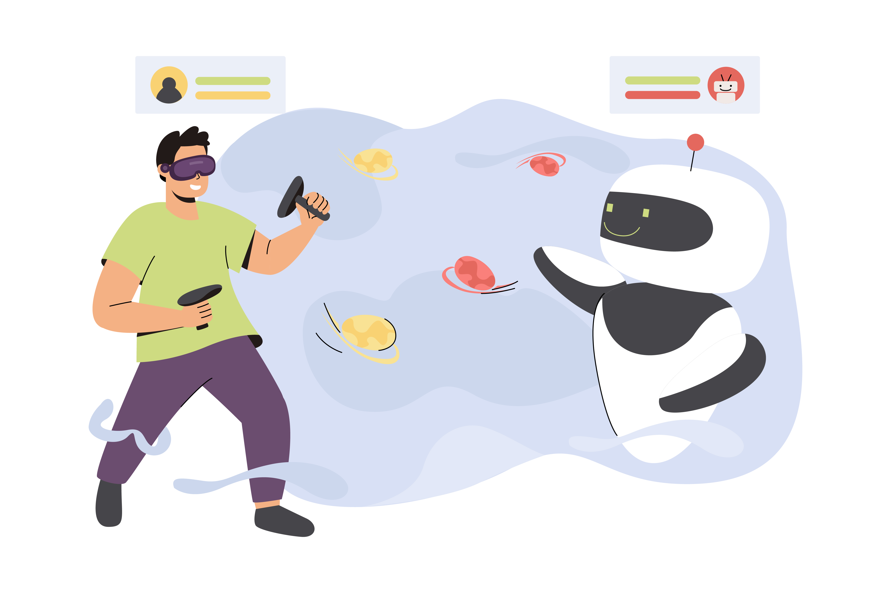

Razer's AI QA Copilot: Revolutionizing Game Testing

Key Takeaways
- Razer's AI QA Copilot is transforming game testing with advanced AI capabilities
- The tool addresses modern gaming's complex testing challenges
- Key features include automated testing, real-time bug detection, and performance monitoring
- Significant improvements in testing efficiency and game quality
The gaming industry is evolving at a breakneck pace, with developers constantly pushing the boundaries of creativity, performance, and user experience. However, as games become more complex—with intricate storylines, massive open worlds, and cutting-edge graphics—the challenges of quality assurance (QA) testing have grown exponentially. Enter Razer's AI QA Copilot, a groundbreaking innovation that is transforming how game testing is conducted. This revolutionary tool leverages artificial intelligence to automate, streamline, and enhance QA processes, ensuring games are bug-free, immersive, and ready for players worldwide.
In this blog post, we'll explore how Razer's AI QA Copilot is redefining game testing, its key features, benefits, and what it means for the future of QA in the gaming industry.
The Growing Complexity of Game Testing
Modern video games are no longer simple programs with linear gameplay. Today's titles often feature:
- Open-world environments: Vast maps with countless interactions and variables.
- Dynamic physics engines: Realistic movement, collisions, and environmental effects.
- Multiplayer functionality: Synchronizing gameplay across thousands of players globally.
- Cross-platform compatibility: Ensuring seamless experiences on consoles, PCs, mobile devices, and cloud gaming platforms.
- Live service models: Continuous updates, patches, and downloadable content (DLC).
With so many moving parts, traditional manual testing methods are no longer sufficient. Manual testers face challenges such as:
- Time constraints: Limited timeframes to test sprawling game worlds.
- Human error: Missed edge cases or overlooked bugs.
- Scalability issues: Difficulty handling large-scale multiplayer scenarios.
- Cost inefficiencies: High resource demands for repetitive tasks.
What is Razer's AI QA Copilot?
Razer's AI QA Copilot is an advanced AI-powered platform tailored specifically for game testing. It acts as a virtual assistant for QA teams, automating repetitive tasks, analyzing vast datasets, and providing actionable insights in real-time. By leveraging machine learning algorithms, computer vision, and predictive analytics, the AI QA Copilot enhances the efficiency, accuracy, and scalability of game testing.
Key components of the AI QA Copilot include:
- Automated Test Execution: Simulates player actions, explores game environments, and identifies anomalies.
- Real-Time Bug Detection: Flags visual glitches, audio issues, and gameplay inconsistencies instantly.
- Performance Monitoring: Tracks frame rates, load times, and memory usage to ensure optimal performance.
- Cross-Platform Validation: Tests games across multiple devices and operating systems simultaneously.
- Data-Driven Insights: Analyzes test results to identify trends, prioritize critical issues, and optimize workflows.
How Razer's AI QA Copilot Works
Razer's AI QA Copilot integrates seamlessly into the game development pipeline, supporting both pre-release and post-launch testing. Here's how it operates:
1. Exploratory Testing
The AI simulates human-like behavior to explore every corner of a game world. It interacts with NPCs, collects items, triggers events, and uncovers hidden bugs that might be missed during scripted tests. For example:
- Climbing to unreachable areas in an open-world RPG.
- Testing edge cases like extreme weather conditions or rare enemy spawns.
2. Visual and Audio Testing
Using computer vision and audio analysis, the AI detects visual glitches (e.g., texture pop-ins, clipping) and audio issues (e.g., overlapping sound effects, missing dialogue). This ensures a polished user experience free from immersion-breaking flaws.
3. Multiplayer Simulation
For multiplayer games, the AI can simulate hundreds or even thousands of virtual players to stress-test servers, matchmaking systems, and network stability. This helps identify bottlenecks, latency issues, and exploits before launch.
4. Regression Testing
Whenever developers release updates or patches, the AI performs regression testing to ensure new changes haven't introduced bugs into existing functionalities. This is particularly useful for live-service games that receive frequent updates.
5. Predictive Analytics
By analyzing historical data, the AI predicts potential risks and highlights areas prone to defects. For instance, if certain levels consistently caused crashes in previous builds, the AI prioritizes those areas for additional scrutiny.
Benefits of Razer's AI QA Copilot
Razer's AI QA Copilot offers numerous advantages over traditional testing methods:
- Faster Time-to-Market: Automation reduces the time required for repetitive tasks, enabling faster iterations and quicker releases without compromising quality.
- Improved Accuracy: AI eliminates human error and ensures comprehensive coverage, identifying issues that might otherwise slip through the cracks.
- Enhanced Scalability: The AI can handle large-scale testing scenarios—such as simulating thousands of concurrent users—that would be impossible for human testers alone.
- Cost Efficiency: By automating routine tasks, studios can allocate resources more effectively, reducing labor costs while increasing productivity.
- Consistent Quality: With real-time monitoring and data-driven insights, the AI ensures consistent quality across all versions of a game, regardless of platform or region.
- Focus on Creativity: By offloading mundane tasks to the AI, QA teams can focus on higher-value activities, such as exploratory testing, usability evaluations, and creative problem-solving.
Case Study: Transforming AAA Game Development
To illustrate the impact of Razer's AI QA Copilot, let's consider a hypothetical case study of a AAA studio developing an open-world action-adventure game.
Challenge
The studio faced significant challenges during the final stages of development:
- Hundreds of hours of gameplay to test manually.
- Frequent updates introducing new content and mechanics.
- Cross-platform compatibility issues across consoles, PC, and next-gen hardware.
- Tight deadlines for meeting the holiday season launch window.
Solution
The studio implemented Razer's AI QA Copilot to streamline their testing process:
- The AI explored the game world 24/7, uncovering hard-to-find bugs in remote areas.
- Automated regression tests ensured new updates didn't break existing features.
- Performance monitoring flagged optimization issues, improving frame rates on lower-end hardware.
- Cross-platform validation identified discrepancies between different devices.
Outcome
Thanks to the AI QA Copilot, the studio:
- Reduced testing time by 40%.
- Identified and fixed critical bugs weeks before the launch date.
- Achieved near-perfect ratings for stability and performance on review platforms.
- Delivered a seamless experience across all supported platforms.
Challenges and Ethical Considerations
While Razer's AI QA Copilot offers immense potential, it also comes with challenges and ethical considerations:
- Skill Gaps: Developers and testers may require training to work effectively with AI tools.
- Over-Reliance on AI: Teams must strike a balance between automation and human intuition to avoid overlooking subjective aspects like fun factor and emotional engagement.
- Bias in AI Models: If the AI is trained on biased data, it may overlook certain types of bugs or prioritize irrelevant issues.
- Job Security Concerns: Some fear that AI could replace human testers entirely, though in reality, it augments rather than replaces them.
The Future of Game Testing with AI
Razer's AI QA Copilot represents just the beginning of AI's role in game testing. As technology advances, we can expect even more innovations, such as:
- AI-Generated Test Cases: Creating test scenarios based on player behavior and feedback.
- Emotion Recognition: Analyzing facial expressions and biometric data to gauge player satisfaction.
- Proactive Issue Resolution: Automatically fixing minor bugs without developer intervention.
- Integration with DevOps Pipelines: Enabling continuous testing throughout the development lifecycle.
Conclusion
Razer's AI QA Copilot is a game-changer for the gaming industry, addressing the growing complexity of game testing with cutting-edge AI technology. By automating repetitive tasks, enhancing accuracy, and providing real-time insights, it empowers QA teams to deliver high-quality games faster and more efficiently than ever before.
As AI continues to evolve, the line between human and machine collaboration will blur further, paving the way for smarter, more immersive gaming experiences. For QA professionals, embracing tools like Razer's AI QA Copilot isn't just about keeping up—it's about staying ahead in an increasingly competitive landscape.
Are you excited about the possibilities of AI in game testing? Share your thoughts or experiences in the comments below. Let's discuss how AI is shaping the future of gaming!
Join Our Community of QA Professionals
Get exclusive access to in-depth articles, testing strategies, and industry insights. Stay ahead of the curve with our expert-curated content delivered straight to your inbox.
Nikunj Mistri
Founder, QA Blogs
About the Author